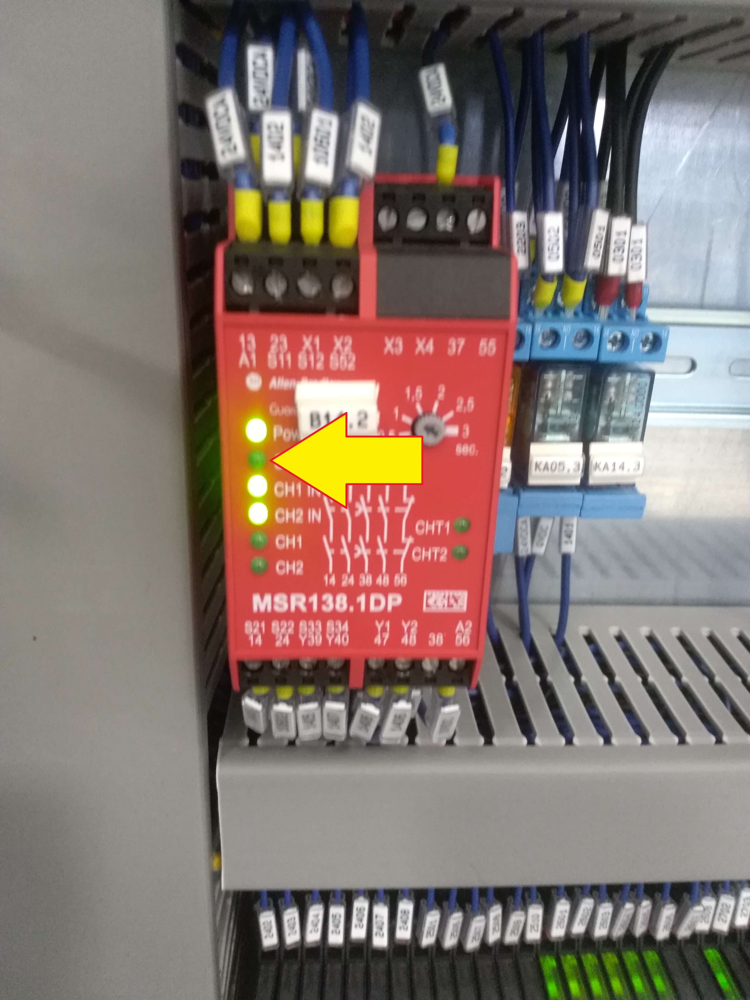
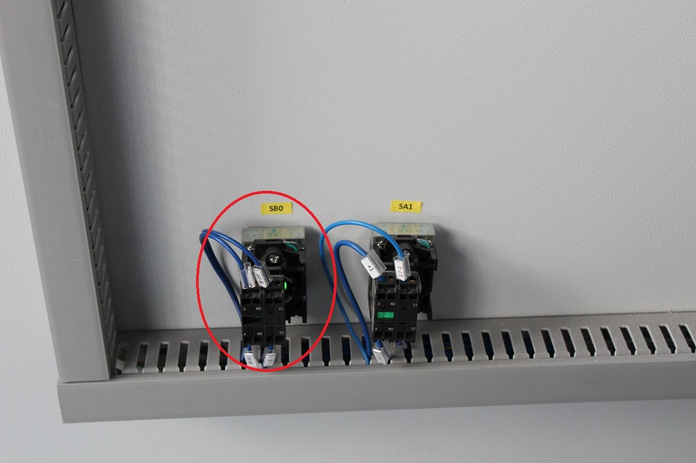

Prima di procedere leggere attentamente le | |
DescrizioneMancanza abilitazione comandi macchina | GravitàLow01 / 05 |
Figura autorizzataOperatore macchina | DPI previsti:  |
Descrizione
Viene visualizzato all'accensione della macchina o successivamente al rilascio del fungo di emergenza.
Sintomi
…..
Possibili cause
Il pulsante di abilitazione comandi (RESET) non è stato premuto;
Malfunzionamento del pulsante abilitazione comandi (RESET) sul quadro elettrico;
Malfunzionamento centralina di sicurezza Pilz.
Possibili soluzioni
Premere il pulsante reset sul quadro elettrico

Controllare contatti del pulsante di abilitazione comandi ovvero quando tengo premuto il pulsante il contatto deve chiudersi e deve apparire sulla centralina il led di start verde in caso sostituire i contatti del pulsante;

